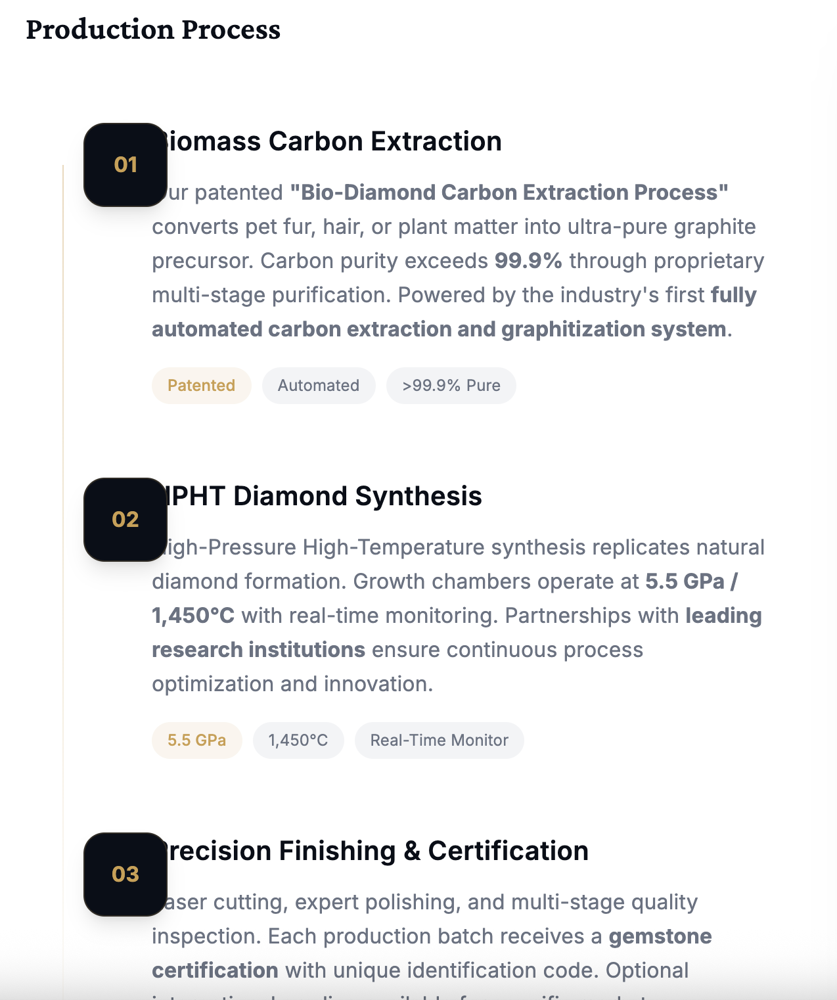

Memorial diamond manufacturing relies on two established synthetic diamond growth technologies: High-Pressure High-Temperature (HPHT) and Chemical Vapor Deposition (CVD). Both produce genuine, gem-quality diamonds from carbon sources including human and animal hair, fur, nails, and botanical materials. But the choice between them affects production timeline, cost structure, color control, and partner profitability — factors that directly impact B2B supply chain decisions.
TL;DR — Quick Summary
HPHT and CVD are both genuine diamond synthesis methods, but they differ in production timeline, cost structure, color control, and scalability. HPHT is the established method for memorial diamonds, producing gem-quality crystals in 10–20 days with predictable color outcomes. CVD offers larger crystal sizes but requires longer growth times and post-growth treatment. For B2B memorial diamond partnerships, HPHT remains the preferred technology due to speed, reliability, and cost efficiency.
This article breaks down the real engineering differences between HPHT and CVD as applied to memorial diamond production, based on our laboratory's experience operating HPHT synthesis since 2012.

Figure 1: Overview of the memorial diamond production pipeline — from biological carbon source extraction through HPHT synthesis to gemological certification.
High-Pressure High-Temperature (HPHT)
HPHT replicates the natural diamond formation environment found approximately 140–190 km beneath Earth's surface. A carbon source — in memorial diamond production, this is purified bio-carbon from hair or fur — is placed in a growth cell with a metal catalyst solvent (typically iron, nickel, or cobalt-based alloys). The cell is compressed to 5–6 GPa (roughly 50,000–60,000 times atmospheric pressure) and heated to 1,300–1,600°C.
Under these conditions, the metal catalyst melts and dissolves the carbon. As the temperature gradient across the growth cell drives carbon supersaturation, diamond nucleates and grows on a seed crystal over a period of 10 to 20 days for a typical 0.5–1.0 carat memorial diamond.
HPHT Advantages for Memorial Diamond Production
- Faster production cycle. Typical memorial diamonds finish synthesis in 10–20 days, with total production time from carbon receipt to finished gem at approximately 35–55 days.
- Direct color control. Nitrogen doping produces yellow diamonds; boron produces blue. Near-colorless grades (D–F) are achievable through controlled nitrogen exclusion.
- Mature industrial infrastructure. HPHT presses, maintenance protocols, and operator training are well-established globally. Replacement parts and technical support are widely available.
- Lower capital intensity per carat. For memorial diamond scales (typically 0.1–2.0 ct), HPHT equipment delivers lower unit cost than CVD systems of equivalent capacity.
HPHT Limitations
- Catalyst inclusion risk. Metal catalyst residues can be trapped in the diamond lattice, requiring careful process control to minimize inclusions that affect clarity grading.
- Size constraints. HPHT is most efficient for diamonds under ~3 carats. Larger stones require longer growth times and face higher defect risk.
- Energy consumption. Maintaining 5+ GPa and 1,400°C requires substantial electrical input, though modern press designs have improved efficiency significantly.
Chemical Vapor Deposition (CVD)
CVD diamond growth occurs in a vacuum chamber at low pressure (typically <0.1 atm) and moderate temperature (700–1,000°C). A carbon-rich gas mixture — usually methane (CH₄) diluted in hydrogen — is introduced into the chamber. Microwave energy ionizes the gas, creating a plasma that deposits carbon atoms layer by layer onto a diamond seed substrate.
For memorial diamonds, the challenge is introducing bio-carbon into the CVD feedstock. Unlike HPHT, where purified graphite powder is directly loaded into the press, CVD requires converting bio-carbon into a gaseous or plasma-compatible form — a non-trivial chemical engineering step that adds complexity and cost to memorial diamond production.
CVD Advantages
- Higher purity potential. CVD can produce Type IIa diamonds — the purest diamond grade — with minimal nitrogen or metal contamination.
- Scalable to larger sizes. CVD is better suited for diamonds over 3 carats, though memorial diamond demand rarely requires this scale.
- Lower pressure requirements. No 5 GPa press infrastructure needed; chamber-based systems are mechanically simpler.
CVD Limitations for Memorial Diamonds
- Slower growth rate. Typical CVD growth rates are 0.5–5 microns per hour. A 1-carat diamond requires 3–8 weeks of continuous deposition.
- Bio-carbon feedstock challenge. Memorial diamond production requires converting biological carbon into a CVD-compatible form. This adds processing steps, cost, and technical risk compared to HPHT's direct graphite approach.
- Post-growth treatment required. As-grown CVD diamonds are often brown or gray due to silicon and nitrogen vacancies. HPHT annealing or irradiation is typically required to achieve colorless or fancy colors.
- Higher capex for memorial scales. CVD systems optimized for gem production carry significant upfront investment. At memorial diamond scales (0.1–2.0 ct), unit economics favor HPHT for most operations.
Side-by-Side Comparison
| Parameter | HPHT | CVD |
|---|---|---|
| Pressure | 5–6 GPa | <0.1 atm (vacuum) |
| Temperature | 1,300–1,600°C | 700–1,000°C |
| Growth Time (1 ct) | 10–20 days | 3–8 weeks |
| Total Production Cycle | ~35–55 days | ~60–120 days |
| Color Control | Direct during growth | Requires post-treatment |
| Metal Inclusions | Possible (catalyst) | None |
| Bio-Carbon Compatibility | Direct graphite loading | Requires gas conversion |
| Optimal Carat Range | 0.1–3.0 ct | 1.0–10+ ct |
Which Method Should Memorial Diamond Manufacturers Choose?
For memorial diamond production at the scales relevant to B2B supply — typically 0.25 ct to 1.5 ct per order, with partner-branded packaging and documentation — HPHT remains the dominant and economically rational choice for most manufacturers.
The reasons are straightforward: faster production cycles (35–55 days total vs. 60–120 days for CVD), direct color control without post-treatment, lower capital investment per carat of capacity, and a simpler bio-carbon feedstock path from hair or fur to diamond.
CVD has clear advantages for applications requiring the highest purity (Type IIa) or very large stones (3+ carats). But in the memorial diamond market, where speed-to-partner, color consistency, and cost control matter more than absolute purity, HPHT's practical advantages are decisive.
BioGem Lab's Position
Our laboratory operates HPHT synthesis exclusively for memorial diamond production. This choice reflects 13 years of operational data: HPHT delivers the production speed, color range, and cost structure our B2B partners need to maintain competitive retail pricing while preserving margin. Our patented carbon extraction technology (ZL 201010565778.9) integrates directly with HPHT feedstock preparation, eliminating the extra conversion steps that CVD would require for bio-carbon sources.
Conclusion
Both HPHT and CVD produce genuine, gem-quality synthetic diamonds. For memorial diamond manufacturing — where the carbon source is biological, production volumes are in the hundreds to thousands of carats annually, and partner delivery timelines are measured in weeks — HPHT offers a superior combination of speed, cost, and color control. CVD remains valuable for specialized applications but is not the optimal choice for mainstream memorial diamond production at current market scales.
Manufacturers evaluating technology investments should weigh total production cycle time, bio-carbon processing complexity, and per-carat unit economics. In our experience, HPHT wins on all three metrics for the memorial diamond B2B market.